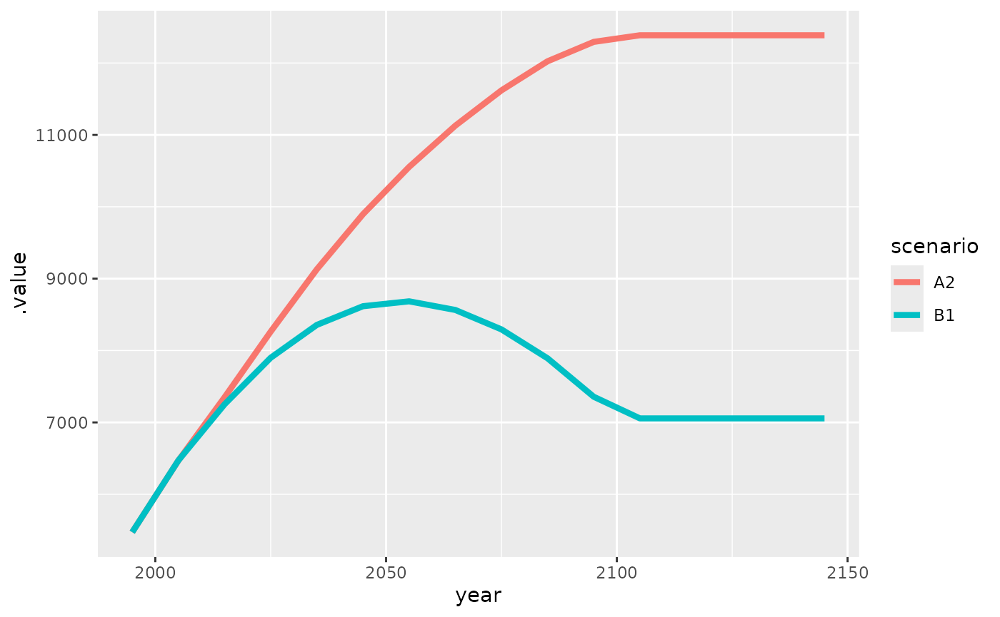

This tutorial provides a basic introduction to magpie objects in R. If you would like to get more details on the concept of and the idea behind magpie objects you can have a look at magclass-concept, where this is explained in more detail by comparing the magpie class to other data classes in R.
Generate a magpie object
Generation of magpie objects can either be done from scratch, by
reading in files or by converting objects from other classes to magpie
objects. For creation of a new magpie object you can use
new.magpie, conversion of an existing object happens with
as.magpie:
library(magclass)
#>
#> Attaching package: 'magclass'
#> The following objects are masked from 'package:base':
#>
#> pmax, pmin
# creating a magpie object with 2 regions, 2 years and 2 different values
m <- new.magpie(cells_and_regions = c("AFR", "CPA"),
years = c(1995, 2000),
names = c("bla", "blub"),
sets = c("region", "year", "value"),
fill = 0)
print(m)
#> , , value = bla
#>
#> year
#> region y1995 y2000
#> AFR 0 0
#> CPA 0 0
#>
#> , , value = blub
#>
#> year
#> region y1995 y2000
#> AFR 0 0
#> CPA 0 0
# converting a simple vector with one value per region to a magpie object
v <- c(ENG = 10, USA = 20, BRA = 30, CHN = 40, IND = 50)
m2 <- as.magpie(v)
str(m2)
#> A magpie object (package: magclass)
#> @ .Data: num [1:5] 10 20 30 40 50
#> $ dimnames:List of 3
#> ..$ fake: chr [1:5] "ENG" "USA" "BRA" "CHN" ...
#> ..$ NA : NULL
#> ..$ NA : NULLIn the example above the names were automatically detected as
regions, if for some reason the automatic detection fails you can also
indicate to what type of dimension the data belongs. Lets assume in the
following example, that the names are not representing regions but
something else. The argument spatial=0 indicates the
non-existence of a spatial dimension, but it can also be used to point
to the spatial dimension in the data.
Accessing magpie objects
For the following a example data set containing population data is used.
pm <- maxample("pop")General properties
Let’s first have a look at the content of the magpie object:
Show the structure of the object:
str(pm)
#> A magpie object (package: magclass)
#> @ .Data: num [1:320] 553 1281 554 276 452 ...
#> $ dimnames:List of 3
#> ..$ i : chr [1:10] "AFR" "CPA" "EUR" "FSU" ...
#> ..$ t : chr [1:16] "y1995" "y2005" "y2015" "y2025" ...
#> ..$ scenario: chr [1:2] "A2" "B1"
#> $ Metadata:List of 3
#> ..$ unit: 'units' num 1e+06
#> .. ..- attr(*, "units")=List of 2
#> .. .. ..$ numerator : chr "people"
#> .. .. ..$ denominator: chr(0)
#> .. .. ..- attr(*, "class")= chr "symbolic_units"
#> ..$ user: chr "jpd"
#> ..$ date: chr "2018-01-15 14:19:27"Show the first elements:
head(pm)
#> An object of class "magpie"
#> , , scenario = A2
#>
#> t
#> i y1995 y2005 y2015 y2025 y2035 y2045
#> AFR 552.6664 696.44 889.18 1124.11 1389.33 1659.73
#> CPA 1280.6350 1429.53 1518.46 1592.09 1640.95 1671.94
#> EUR 554.4384 582.36 593.76 605.27 614.58 618.97
#>
#> , , scenario = B1
#>
#> t
#> i y1995 y2005 y2015 y2025 y2035 y2045
#> AFR 552.6664 721.85 932.04 1118.33 1267.33 1383.24
#> CPA 1280.6350 1429.26 1499.74 1531.12 1518.73 1463.68
#> EUR 554.4384 587.21 603.63 613.98 619.48 617.12Show the last elements:
tail(pm)
#> An object of class "magpie"
#> , , scenario = A2
#>
#> t
#> i y2095 y2105 y2115 y2125 y2135 y2145
#> PAO 166.31 167.49 167.49 167.49 167.49 167.49
#> PAS 843.52 839.53 839.53 839.53 839.53 839.53
#> SAS 3007.86 2972.39 2972.39 2972.39 2972.39 2972.39
#>
#> , , scenario = B1
#>
#> t
#> i y2095 y2105 y2115 y2125 y2135 y2145
#> PAO 140.82 138.80 138.80 138.80 138.80 138.80
#> PAS 536.24 507.06 507.06 507.06 507.06 507.06
#> SAS 1629.07 1528.15 1528.15 1528.15 1528.15 1528.15Which elements are there?
getItems(pm)
#> $i
#> [1] "AFR" "CPA" "EUR" "FSU" "LAM" "MEA" "NAM" "PAO" "PAS" "SAS"
#>
#> $t
#> [1] "y1995" "y2005" "y2015" "y2025" "y2035" "y2045" "y2055" "y2065"
#> [9] "y2075" "y2085" "y2095" "y2105" "y2115" "y2125" "y2135" "y2145"
#>
#> $scenario
#> [1] "A2" "B1"Which spatial elements are there?
getItems(pm, dim = 1)
#> [1] "AFR" "CPA" "EUR" "FSU" "LAM" "MEA" "NAM" "PAO" "PAS" "SAS"Which scenarios?
getItems(pm, dim = 3)
#> [1] "A2" "B1"getItems as well as most of the other functions allow to
select a dimension either via its dimension code (as done in the
previous example), or via its dimension name:
getItems(pm, dim = "scenario")
#> [1] "A2" "B1"In terms of readability it is recommended to use the dimension name where possible, but one has to keep in mind that sometimes the dimension name might not be well defined and vary from case to case. In these instances it is safer to use the dimension code.
What are the sets (dimensions names) of the data?
getSets(pm)
#> d1.1 d2.1 d3.1
#> "i" "t" "scenario"are there any comments which come with the data?
getComment(pm)
#> NULLlet’s have a look at a higher dimensional object
a <- maxample("animal")what is the full dimensionality of this object?
getItems(a)
#> $x.y.country.cell
#> [1] "5p75.53p25.NLD.14084" "6p25.53p25.NLD.14113"
#> [3] "6p75.53p25.NLD.14141" "4p75.52p75.NLD.14040"
#> [5] "5p75.52p75.NLD.14083" "6p25.52p75.NLD.14112"
#> [7] "6p75.52p75.NLD.14140" "4p75.52p25.NLD.14039"
#> [9] "5p25.52p25.NLD.14058" "5p75.52p25.NLD.14082"
#> [11] "6p25.52p25.NLD.14111" "6p75.52p25.NLD.14139"
#> [13] "4p25.51p75.NLD.14021" "4p75.51p75.NLD.14038"
#> [15] "5p25.51p75.NLD.14057" "5p75.51p75.NLD.14081"
#> [17] "3p25.51p25.BEL.13988" "3p75.51p25.BEL.14004"
#> [19] "4p25.51p25.BEL.14020" "4p75.51p25.BEL.14037"
#> [21] "5p25.51p25.BEL.14056" "5p75.51p25.NLD.14080"
#> [23] "3p25.50p75.BEL.13987" "3p75.50p75.BEL.14003"
#> [25] "4p25.50p75.BEL.14019" "4p75.50p75.BEL.14036"
#> [27] "5p25.50p75.BEL.14055" "5p75.50p75.BEL.14079"
#> [29] "4p25.50p25.BEL.14018" "4p75.50p25.BEL.14035"
#> [31] "5p25.50p25.BEL.14054" "5p75.50p25.BEL.14078"
#> [33] "5p25.49p75.BEL.14053" "5p75.49p75.BEL.14077"
#> [35] "6p25.49p75.LUX.14106"
#>
#> $year.month.day
#> [1] "y2000.april.20" "y2000.may.20" "y2000.june.20"
#> [4] "y2001.april.20" "y2001.may.20" "y2001.june.20"
#> [7] "y2002.april.20" "y2002.may.20" "y2002.june.20"
#> [10] "y2002.august.20"
#>
#> $type.species.color
#> [1] "animal.rabbit.black" "animal.rabbit.white" "animal.bird.black"
#> [4] "animal.bird.red" "animal.dog.brown"…split in sub-dimensions
getItems(a, split = TRUE)
#> [[1]]
#> [[1]]$x
#> [1] "5p75" "6p25" "6p75" "4p75" "5p25" "4p25" "3p25" "3p75"
#>
#> [[1]]$y
#> [1] "53p25" "52p75" "52p25" "51p75" "51p25" "50p75" "50p25" "49p75"
#>
#> [[1]]$country
#> [1] "NLD" "BEL" "LUX"
#>
#> [[1]]$cell
#> [1] "14084" "14113" "14141" "14040" "14083" "14112" "14140" "14039"
#> [9] "14058" "14082" "14111" "14139" "14021" "14038" "14057" "14081"
#> [17] "13988" "14004" "14020" "14037" "14056" "14080" "13987" "14003"
#> [25] "14019" "14036" "14055" "14079" "14018" "14035" "14054" "14078"
#> [33] "14053" "14077" "14106"
#>
#>
#> [[2]]
#> [[2]]$year
#> [1] "y2000" "y2001" "y2002"
#>
#> [[2]]$month
#> [1] "april" "may" "june" "august"
#>
#> [[2]]$day
#> [1] "20"
#>
#>
#> [[3]]
#> [[3]]$type
#> [1] "animal"
#>
#> [[3]]$species
#> [1] "rabbit" "bird" "dog"
#>
#> [[3]]$color
#> [1] "black" "white" "red" "brown"These functions can also be used to manipulate the object:
set a comment
getComment(pm) <- "This is a comment!"
getComment(pm)
#> [1] "This is a comment!"…or alternatively
pm2 <- setComment(pm, "This is comment for pm2!")
getComment(pm2)
#> [1] "This is comment for pm2!"rename 1st region in “RRR”
getItems(pm, dim = 1)[1] <- "RRR"rename region set in “zones”
getSets(pm)[2] <- "year"Finally, to get a quick impression of the content of the object, you can get a rough plot:
mplot(pm)
Subsets
Now that we have had a look into the structure of the object let’s extract some subsets out of it. There are different methods that can be used to extract data from a magpie object. Here are some examples:
Return all A2 related data for LAM and the years 2005 and 2015
pm["LAM", c(2005, 2015), "A2"]
#> An object of class "magpie"
#> , , scenario = A2
#>
#> year
#> i y2005 y2015
#> LAM 558.29 646.02Return data for regions which have “AS” in its name (pmatch allows for partial matching of the given search string)
pm["AS", , , pmatch = TRUE]
#> An object of class "magpie"
#> , , scenario = A2
#>
#> year
#> i y1995 y2005 y2015 y2025 y2035 y2045 y2055
#> PAS 383.2277 534.73 604.94 668.49 723.13 767.30 798.68
#> SAS 1269.9243 1505.02 1796.76 2095.48 2369.60 2600.68 2783.75
#> year
#> i y2065 y2075 y2085 y2095 y2105 y2115 y2125 y2135
#> PAS 819.21 834.31 844.38 843.52 839.53 839.53 839.53 839.53
#> SAS 2920.70 3006.60 3040.10 3007.86 2972.39 2972.39 2972.39 2972.39
#> year
#> i y2145
#> PAS 839.53
#> SAS 2972.39
#>
#> , , scenario = B1
#>
#> year
#> i y1995 y2005 y2015 y2025 y2035 y2045 y2055
#> PAS 383.2277 530.67 590.42 639.68 674.98 692.45 689.79
#> SAS 1269.9243 1475.64 1687.80 1870.96 1999.15 2072.68 2090.96
#> year
#> i y2065 y2075 y2085 y2095 y2105 y2115 y2125 y2135
#> PAS 668.98 634.64 590.05 536.24 507.06 507.06 507.06 507.06
#> SAS 2049.18 1953.77 1811.83 1629.07 1528.15 1528.15 1528.15 1528.15
#> year
#> i y2145
#> PAS 507.06
#> SAS 1528.15If you want to specifically select from one dimension from which you have the dimension name:
mselect(pm, scenario = "B1", i = c("FSU", "LAM"))
#> An object of class "magpie"
#> , , scenario = B1
#>
#> year
#> i y1995 y2005 y2015 y2025 y2035 y2045 y2055 y2065 y2075
#> FSU 276.3431 296.84 305.26 309.78 311.47 309.03 301.99 292.46 281.39
#> LAM 451.9981 552.79 623.20 681.60 723.44 747.70 753.98 743.05 718.79
#> year
#> i y2085 y2095 y2105 y2115 y2125 y2135 y2145
#> FSU 269.77 257.52 251.04 251.04 251.04 251.04 251.04
#> LAM 683.68 637.69 611.88 611.88 611.88 611.88 611.88Or you can use alternatively:
pm[list(i = c("FSU", "LAM")), , list(scenario = "B1")]
#> An object of class "magpie"
#> , , scenario = B1
#>
#> year
#> i y1995 y2005 y2015 y2025 y2035 y2045 y2055 y2065 y2075
#> FSU 276.3431 296.84 305.26 309.78 311.47 309.03 301.99 292.46 281.39
#> LAM 451.9981 552.79 623.20 681.60 723.44 747.70 753.98 743.05 718.79
#> year
#> i y2085 y2095 y2105 y2115 y2125 y2135 y2145
#> FSU 269.77 257.52 251.04 251.04 251.04 251.04 251.04
#> LAM 683.68 637.69 611.88 611.88 611.88 611.88 611.88Data transformations / calculations
Now we can perform some calculations with it.
take a subset of the data as an example
d <- head(pm)create a new object with some fancy calculations
d2 <- d^2 + 12 * d + 99 / exp(d)
getItems(d2, dim = 3) <- c("NEWSCEN1", "NEWSCEN2")
getSets(d2)[3] <- "newscen"
d2
#> An object of class "magpie"
#> , , newscen = NEWSCEN1
#>
#> year
#> i y1995 y2005 y2015 y2025 y2035 y2045
#> RRR 312072.1 493386.0 801311.2 1277113 1946909.7 2774620.4
#> CPA 1655393.6 2060710.5 2323942.2 2553856 2712408.1 2815446.4
#> EUR 314055.2 346131.5 359676.1 373615 385083.6 390551.5
#>
#> , , newscen = NEWSCEN2
#>
#> year
#> i y1995 y2005 y2015 y2025 y2035 y2045
#> RRR 312072.1 529729.6 879883.0 1264081.9 1621333.2 1929951.8
#> CPA 1655393.6 2059935.3 2267216.9 2362701.9 2324765.5 2159923.5
#> EUR 314055.2 351862.1 371612.7 384339.2 391189.2 388242.5multiply both data sets with each other
d <- d * d2
d
#> An object of class "magpie"
#> , , scenario.newscen = A2.NEWSCEN1
#>
#> year
#> i y1995 y2005 y2015 y2025 y2035
#> RRR 172471773 343613717 712509904 1435615002 2704899949
#> CPA 2119955061 2945847491 3528813140 4065967778 4450926008
#> EUR 174124277 201573119 213561266 226137981 236664659
#> year
#> i y2045
#> RRR 4605120609
#> CPA 4707257368
#> EUR 241739628
#>
#> , , scenario.newscen = A2.NEWSCEN2
#>
#> year
#> i y1995 y2005 y2015 y2025 y2035
#> RRR 172471773 368924875 782374360 1420967030 2252566752
#> CPA 2119955061 2944739364 3442678113 3761633954 3814823856
#> EUR 174124277 204910425 220648786 232628981 240417069
#> year
#> i y2045
#> RRR 3203198781
#> CPA 3611262304
#> EUR 240310466
#>
#> , , scenario.newscen = B1.NEWSCEN1
#>
#> year
#> i y1995 y2005 y2015 y2025 y2035
#> RRR 172471773 356150641 746854091 1428233254 2467376967
#> CPA 2119955061 2945291059 3485309011 3910259280 4119415564
#> EUR 174124277 203251869 217111267 229392153 238551555
#> year
#> i y2045
#> RRR 3837965851
#> CPA 4120912807
#> EUR 241017118
#>
#> , , scenario.newscen = B1.NEWSCEN2
#>
#> year
#> i y1995 y2005 y2015 y2025 y2035
#> RRR 172471773 382385289 820086132 1413660600 2054764104
#> CPA 2119955061 2944183141 3400235879 3617580090 3530691083
#> EUR 174124277 206616969 224316602 235976560 242333882
#> year
#> i y2045
#> RRR 2669586440
#> CPA 3161436886
#> EUR 239592227Because we changed the names of the elements in the data dimension it is assumed that they reflect different dimensions. Therefor the object is blown up in size instead of just having the elements multiplied pairwise with each other as it happens when two objects with identical dimensionality are multiplied with each other:
d2 * d2
#> An object of class "magpie"
#> , , newscen = NEWSCEN1
#>
#> year
#> i y1995 y2005 y2015 y2025 y2035
#> RRR 9.738901e+10 2.434297e+11 6.420997e+11 1.631017e+12 3.790457e+12
#> CPA 2.740328e+12 4.246528e+12 5.400707e+12 6.522178e+12 7.357158e+12
#> EUR 9.863068e+10 1.198070e+11 1.293669e+11 1.395882e+11 1.482893e+11
#> year
#> i y2045
#> RRR 7.698518e+12
#> CPA 7.926739e+12
#> EUR 1.525304e+11
#>
#> , , newscen = NEWSCEN2
#>
#> year
#> i y1995 y2005 y2015 y2025 y2035
#> RRR 9.738901e+10 2.806134e+11 7.741941e+11 1.597903e+12 2.628721e+12
#> CPA 2.740328e+12 4.243333e+12 5.140273e+12 5.582360e+12 5.404535e+12
#> EUR 9.863068e+10 1.238070e+11 1.380960e+11 1.477166e+11 1.530290e+11
#> year
#> i y2045
#> RRR 3.724714e+12
#> CPA 4.665269e+12
#> EUR 1.507323e+11sum over the data dimension
dimSums(d, dim = 3)
#> An object of class "magpie"
#> , , 1
#>
#> year
#> i y1995 y2005 y2015 y2025 y2035
#> RRR 689887091 1451074522 3061824487 5698475887 9479607771
#> CPA 8479820244 11780061055 13857036143 15355441102 15915856510
#> EUR 696497109 816352383 875637922 924135674 957967165
#> year
#> i y2045
#> RRR 14315871681
#> CPA 15600869364
#> EUR 962659440..over the second data dimension only
dimSums(d, dim = 3.2)
#> An object of class "magpie"
#> , , scenario = A2
#>
#> year
#> i y1995 y2005 y2015 y2025 y2035
#> RRR 344943546 712538592 1494884264 2856582032 4957466700
#> CPA 4239910122 5890586855 6971491254 7827601732 8265749863
#> EUR 348248554 406483544 434210052 458766961 477081728
#> year
#> i y2045
#> RRR 7808319390
#> CPA 8318519671
#> EUR 482050095
#>
#> , , scenario = B1
#>
#> year
#> i y1995 y2005 y2015 y2025 y2035
#> RRR 344943546 738535930 1566940224 2841893854 4522141071
#> CPA 4239910122 5889474200 6885544890 7527839370 7650106647
#> EUR 348248554 409868839 441427869 465368713 480885436
#> year
#> i y2045
#> RRR 6507552291
#> CPA 7282349693
#> EUR 480609345..or alternatively addressed by name
dimSums(d, dim = "newscen")
#> An object of class "magpie"
#> , , scenario = A2
#>
#> year
#> i y1995 y2005 y2015 y2025 y2035
#> RRR 344943546 712538592 1494884264 2856582032 4957466700
#> CPA 4239910122 5890586855 6971491254 7827601732 8265749863
#> EUR 348248554 406483544 434210052 458766961 477081728
#> year
#> i y2045
#> RRR 7808319390
#> CPA 8318519671
#> EUR 482050095
#>
#> , , scenario = B1
#>
#> year
#> i y1995 y2005 y2015 y2025 y2035
#> RRR 344943546 738535930 1566940224 2841893854 4522141071
#> CPA 4239910122 5889474200 6885544890 7527839370 7650106647
#> EUR 348248554 409868839 441427869 465368713 480885436
#> year
#> i y2045
#> RRR 6507552291
#> CPA 7282349693
#> EUR 480609345sum over regions and first data dimension
dimSums(d, dim = c(1, 3.1))
#> An object of class "magpie"
#> , , newscen = NEWSCEN1
#>
#> year
#> d1 y1995 y2005 y2015 y2025 y2035
#> [1,] 4933102222 6995727898 8904158681 11295605448 14217834702
#> year
#> d1 y2045
#> [1,] 17754013380
#>
#> , , newscen = NEWSCEN2
#>
#> year
#> d1 y1995 y2005 y2015 y2025 y2035
#> [1,] 4933102222 7051760063 8890339872 10682447215 12135596744
#> year
#> d1 y2045
#> [1,] 13125387105apply a lowpass filter on the data
lowpass(d)
#> An object of class "magpie"
#> , , scenario.newscen = A2.NEWSCEN1
#>
#> year
#> i y1995 y2005 y2015 y2025 y2035
#> RRR 215257259 393052278 801062132 1572159964 2862633877
#> CPA 2326428169 2885115796 3517360387 4027918676 4418769290
#> EUR 180986488 197707946 213708408 225625472 235301732
#> year
#> i y2045
#> RRR 4130065444
#> CPA 4643174528
#> EUR 240470886
#>
#> , , scenario.newscen = A2.NEWSCEN2
#>
#> year
#> i y1995 y2005 y2015 y2025 y2035
#> RRR 221585048 423173971 838660156 1469218793 2282324829
#> CPA 2326151137 2863027975 3397932386 3695192469 3750635992
#> EUR 181820814 201148478 219709244 231580954 238443396
#> year
#> i y2045
#> RRR 2965540774
#> CPA 3662152692
#> EUR 240337117
#>
#> , , scenario.newscen = B1.NEWSCEN1
#>
#> year
#> i y1995 y2005 y2015 y2025 y2035
#> RRR 218391490 407906787 819523019 1517674392 2550238260
#> CPA 2326289061 2873961548 3456542090 3856310784 4067500804
#> EUR 181406175 199434821 216716639 228611782 236878095
#> year
#> i y2045
#> RRR 3495318630
#> CPA 4120538496
#> EUR 240400727
#>
#> , , scenario.newscen = B1.NEWSCEN2
#>
#> year
#> i y1995 y2005 y2015 y2025 y2035
#> RRR 224950152 439332121 859054538 1425542859 2048193812
#> CPA 2326012081 2852139305 3340558747 3541521785 3460099785
#> EUR 182247450 202918704 222806683 234650901 240059138
#> year
#> i y2045
#> RRR 2515880856
#> CPA 3253750435
#> EUR 240277641do a linear interpolation of the data over time (yearly)
time_interpolate(d[, , 1], 2005:2030)
#> An object of class "magpie"
#> , , scenario.newscen = A2.NEWSCEN1
#>
#> year
#> i y2005 y2006 y2007 y2008 y2009
#> RRR 343613717 380503336 417392955 454282573 491172192
#> CPA 2945847491 3004144056 3062440621 3120737186 3179033751
#> EUR 201573119 202771934 203970749 205169563 206368378
#> year
#> i y2010 y2011 y2012 y2013 y2014
#> RRR 528061811 564951429 601841048 638730667 675620285
#> CPA 3237330316 3295626881 3353923446 3412220011 3470516576
#> EUR 207567193 208766008 209964822 211163637 212362452
#> year
#> i y2015 y2016 y2017 y2018 y2019
#> RRR 712509904 784820414 857130924 929441434 1001751943
#> CPA 3528813140 3582528604 3636244068 3689959532 3743674995
#> EUR 213561266 214818938 216076609 217334281 218591952
#> year
#> i y2020 y2021 y2022 y2023 y2024
#> RRR 1074062453 1146372963 1218683473 1290993983 1363304493
#> CPA 3797390459 3851105923 3904821386 3958536850 4012252314
#> EUR 219849624 221107295 222364966 223622638 224880309
#> year
#> i y2025 y2026 y2027 y2028 y2029
#> RRR 1435615002 1562543497 1689471992 1816400486 1943328981
#> CPA 4065967778 4104463601 4142959424 4181455247 4219951070
#> EUR 226137981 227190648 228243316 229295984 230348652
#> year
#> i y2030
#> RRR 2070257476
#> CPA 4258446893
#> EUR 231401320split the data, do some calculations and bind it back together
d1 <- d[, 1:3, ] * 100
d2 <- d[, 4:6, ] * (-1)
dd <- mbind(d1, d2)
dd
#> An object of class "magpie"
#> , , scenario.newscen = A2.NEWSCEN1
#>
#> year
#> i y1995 y2005 y2015 y2025 y2035
#> RRR 17247177286 34361371712 71250990410 -1435615002 -2704899949
#> CPA 211995506103 294584749142 352881314048 -4065967778 -4450926008
#> EUR 17412427723 20157311917 21356126643 -226137981 -236664659
#> year
#> i y2045
#> RRR -4605120609
#> CPA -4707257368
#> EUR -241739628
#>
#> , , scenario.newscen = A2.NEWSCEN2
#>
#> year
#> i y1995 y2005 y2015 y2025 y2035
#> RRR 17247177286 36892487484 78237435983 -1420967030 -2252566752
#> CPA 211995506103 294473936352 344267811303 -3761633954 -3814823856
#> EUR 17412427723 20491042497 22064878583 -232628981 -240417069
#> year
#> i y2045
#> RRR -3203198781
#> CPA -3611262304
#> EUR -240310466
#>
#> , , scenario.newscen = B1.NEWSCEN1
#>
#> year
#> i y1995 y2005 y2015 y2025 y2035
#> RRR 17247177286 35615064104 74685409122 -1428233254 -2467376967
#> CPA 211995506103 294529105935 348530901109 -3910259280 -4119415564
#> EUR 17412427723 20325186949 21711126748 -229392153 -238551555
#> year
#> i y2045
#> RRR -3837965851
#> CPA -4120912807
#> EUR -241017118
#>
#> , , scenario.newscen = B1.NEWSCEN2
#>
#> year
#> i y1995 y2005 y2015 y2025 y2035
#> RRR 17247177286 38238528941 82008613234 -1413660600 -2054764104
#> CPA 211995506103 294418314075 340023587875 -3617580090 -3530691083
#> EUR 17412427723 20661696919 22431660178 -235976560 -242333882
#> year
#> i y2045
#> RRR -2669586440
#> CPA -3161436886
#> EUR -239592227set all values greater than 0.5 to 0.51
d[d > 0.5] <- 0.51
d
#> An object of class "magpie"
#> , , scenario.newscen = A2.NEWSCEN1
#>
#> year
#> i y1995 y2005 y2015 y2025 y2035 y2045
#> RRR 0.51 0.51 0.51 0.51 0.51 0.51
#> CPA 0.51 0.51 0.51 0.51 0.51 0.51
#> EUR 0.51 0.51 0.51 0.51 0.51 0.51
#>
#> , , scenario.newscen = A2.NEWSCEN2
#>
#> year
#> i y1995 y2005 y2015 y2025 y2035 y2045
#> RRR 0.51 0.51 0.51 0.51 0.51 0.51
#> CPA 0.51 0.51 0.51 0.51 0.51 0.51
#> EUR 0.51 0.51 0.51 0.51 0.51 0.51
#>
#> , , scenario.newscen = B1.NEWSCEN1
#>
#> year
#> i y1995 y2005 y2015 y2025 y2035 y2045
#> RRR 0.51 0.51 0.51 0.51 0.51 0.51
#> CPA 0.51 0.51 0.51 0.51 0.51 0.51
#> EUR 0.51 0.51 0.51 0.51 0.51 0.51
#>
#> , , scenario.newscen = B1.NEWSCEN2
#>
#> year
#> i y1995 y2005 y2015 y2025 y2035 y2045
#> RRR 0.51 0.51 0.51 0.51 0.51 0.51
#> CPA 0.51 0.51 0.51 0.51 0.51 0.51
#> EUR 0.51 0.51 0.51 0.51 0.51 0.51round the data
round(d, 0)
#> An object of class "magpie"
#> , , scenario.newscen = A2.NEWSCEN1
#>
#> year
#> i y1995 y2005 y2015 y2025 y2035 y2045
#> RRR 1 1 1 1 1 1
#> CPA 1 1 1 1 1 1
#> EUR 1 1 1 1 1 1
#>
#> , , scenario.newscen = A2.NEWSCEN2
#>
#> year
#> i y1995 y2005 y2015 y2025 y2035 y2045
#> RRR 1 1 1 1 1 1
#> CPA 1 1 1 1 1 1
#> EUR 1 1 1 1 1 1
#>
#> , , scenario.newscen = B1.NEWSCEN1
#>
#> year
#> i y1995 y2005 y2015 y2025 y2035 y2045
#> RRR 1 1 1 1 1 1
#> CPA 1 1 1 1 1 1
#> EUR 1 1 1 1 1 1
#>
#> , , scenario.newscen = B1.NEWSCEN2
#>
#> year
#> i y1995 y2005 y2015 y2025 y2035 y2045
#> RRR 1 1 1 1 1 1
#> CPA 1 1 1 1 1 1
#> EUR 1 1 1 1 1 1